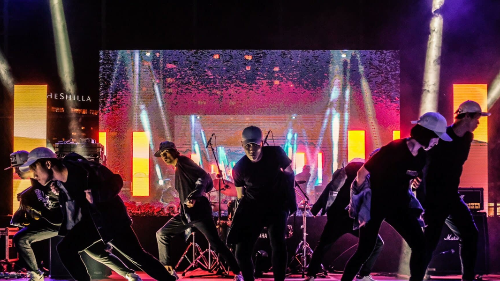
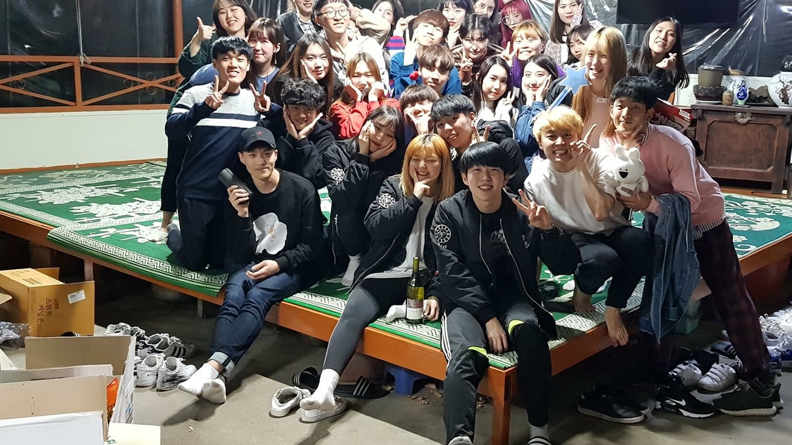
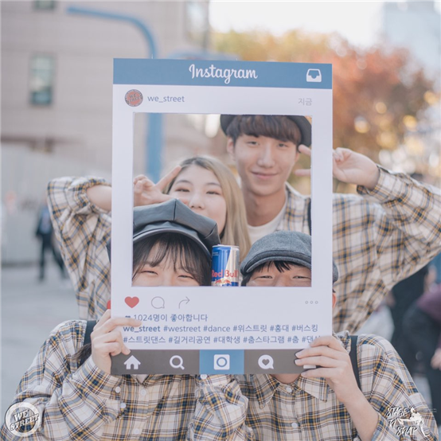

odc
Street Dance(Poppin, Locking, Breakin, House, Wacking, GirlsHiphop, Hiphop, Urban, Krump)를 중심으로 하며 연습 및 이론학습으로 올바른Street Dance 문화를 배우고 전파하는 데 목적을 둔다. 동국대학교 내부 축제 공연 및 행사 공연, 외부 대학교 축제 및 정기 공연 때 찬조공연, 플래시몹 그리고 외부 대학 댄스 동아리들과 연합공연을 기획하여 대외적으로 동아리 이름을 알리고 동아리원들이 춤 문화를 건전하게 받아들이고 즐겁고 색다른 학교 활동이 되도록 한다.
what we do?
 매주 정기연습
매주 정기연습

다양한 교내 축제활동

동아리 내 친목활동

교외 외부활동